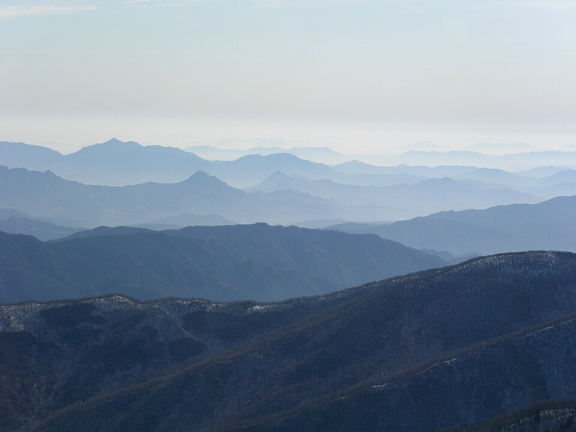
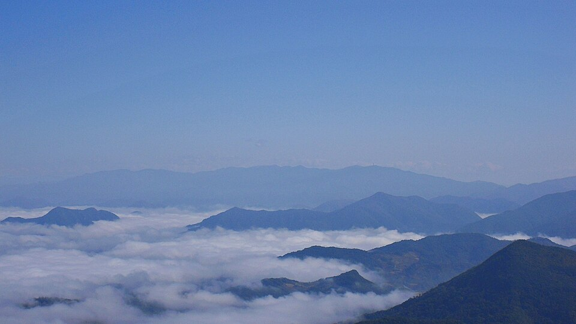
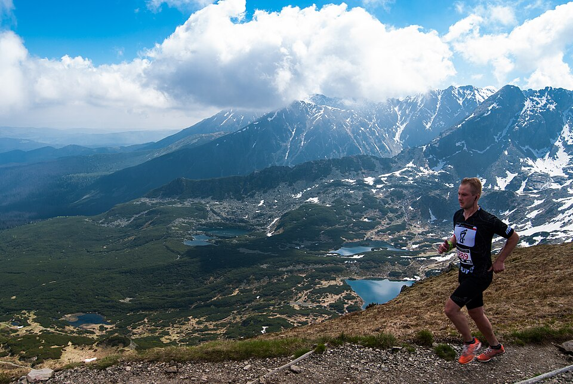

능선, 운해, 숲길.
코스에서 만나게 될 풍경입니다.






신청부터 레이스까지.
날짜는 확정되는 대로 이 자리에 올립니다.
2027년 1월 말
참가 신청 시작
이 사이트에서 코스를 고르고 결제합니다.
미정
참가 신청 마감
코스별 정원이 차면 먼저 닫힙니다.
대회 전날
배번 수령과 장비 검사
필수 장비를 모두 확인받아야 배번을 받습니다.
대회일
레이스
50K 05:00, 25K 06:30, 10K 08:00 순서로 출발합니다.